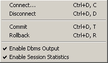

| Session Menu | Previous Top Next |
|

|
Connect : Connect to
database.
Disconnect : Disconnect to database.
Commit : Commit last transactions.
Rollback : Rollback last transactions.
Enable Dbms Output : Enable/disable DBMS Output.
Enable Session Statistics : Enable/disable session Statistic.
|